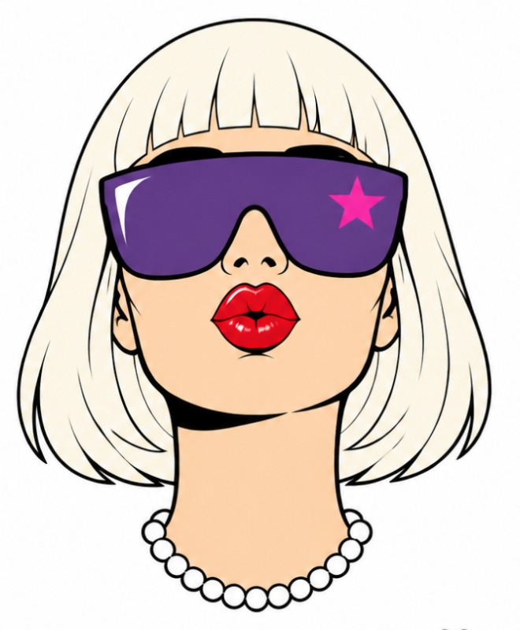

EIN NACHMITTAG FÜR FRAUEN

Drei Stunden mit Tee und anderen Frauen. Du probierst aus, wie Gedanken, Körper und Ausstrahlung zusammenhängen, und erlebst selbst, wie viel du in deinem Leben bewegen kannst.
WACHGEKÜSST
EINLADUNG
Du erlebst in kleinen Experimenten selbst, wie Gedanken, Körper und Ausstrahlung zusammenspielen. Alle großen Wörter wie Frequenz, Resonanz und Manifestation bekommen ein Bild aus deinem Alltag.
WANN
[UHRZEIT]
[ORT]
WACHGEKÜSST · EIN NACHMITTAG FÜR FRAUEN
Du probierst es aus, statt nur darüber zu lesen. Zitronen, Gedanken, Körper und ein bisschen Lachen.
EINLADUNG ZUM NACHMITTAG
Eine Geschichte in sieben Schritten. Bei jedem machst du ein kleines Experiment und erlebst selbst, dass es stimmt.